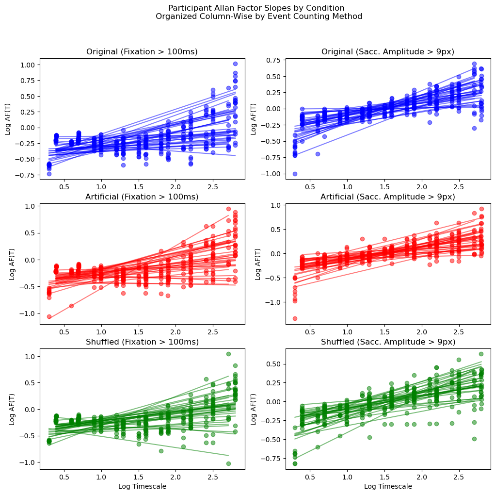
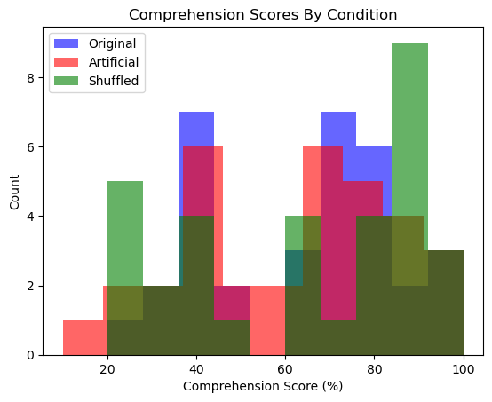
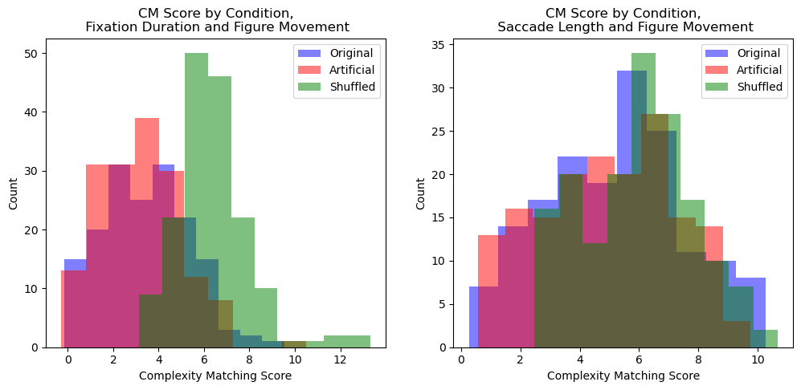
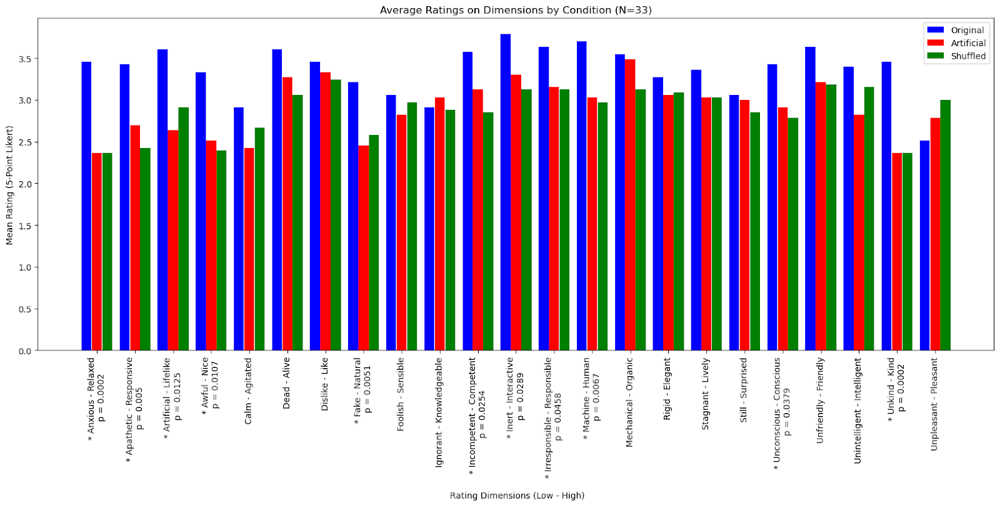
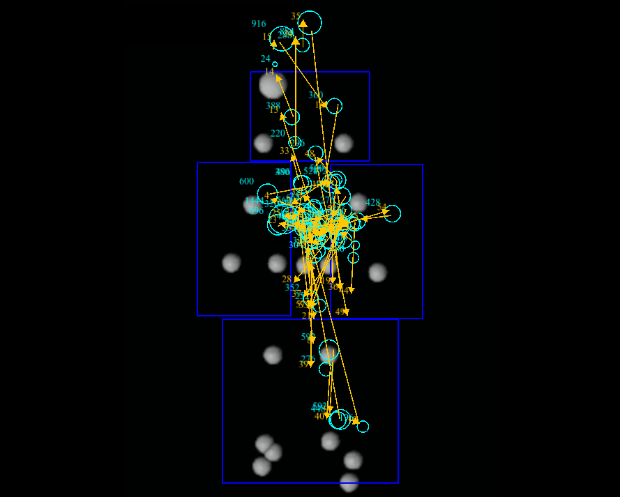

Complexity in Gesture and Gaze between Human and Virtual Agent Interlocutors
Complexity matching is a phenomena of variability converging between interlocutors. The variability is measured by complexity measures (e.g. Allan Factors, DFA) and has been found in human-human speech, gesture, and movement during collaboration and conversation.
This project sought to experimentally operationalize complexity matching, as previous work has only been able to observe its presence. To accomplish this, we used virtual agents and created conditions of differently complex movements for these agents.
This project was largely exploratory: attempting to find cross-modal complexity matching, the use of virtual interlocutors, and examining gaze/eye-tracking data in this framework.
We did not observe the complexity measures in participant gaze, and therefore no complexity matching between participant gaze and virtual agent gesture.
Nevertheless, this project makes some contributions: pioneering the experimental manipulation of complexity, exploring different methods of parsing eye-tracking data for complexity analysis, and examining at complexity matching in a human-virtual agent context.
To those ends, we conclude that virtual agent fidelity may occlude any potential complexity effects and that future work should create unique complexity-retaining communicative signals to rule out alternative explanations that differences, or lack thereof, are due to the particular trajectory used. This project's methodologies lay the groundwork for that iterative creation.
Complexity of Participant Eye-Movements

Individual participants' eye-movement Allan Factor by timescale for each condition (row-wise, by color), and for each event-counting methods (column-wise, left: fixations greater than 100ms, right: saccade amplitudes greater than 9 pixels). Each participant contributed one slope for all 3 conditions, and therefore are represented in every graph. In sum, the slopes were not significantly different across conditions.
Comprehension Score by Condition

Distribution of comprehension scores across condition. There is a bimodality indicating low participant engagement or attention. Analyses were conducted with and without these low comprehension scorers, using a 50% score exclusion threshold, and did not change any result.
Complexity Matching between Participant Gaze and Virtual Agent Gesture

Distributions of Complexity Matching score by event counting method.
GODSPEED Questionnaire Responses by Condition

Average 5-point Likert ratings on the GODSPEED questionnaire items by condition. One term in each pair was placed at the respective end of the rating scale. Statistically significant comparisons between conditions are denoted with an asterisk and the p-value is reported.
Example participant gaze trajectory

Participants
Thirty-three participants were recruited from the University of California, Merced and compensated with course-credit.
Conditions
Virtual Agent Movement Conditions:
Original Movement: Retains original complexity
Artificial: Experimentally constructed, Same complexity as Original condition, Same overall variability (mean, standard deviation)
Shufflied: Experimentally constructed, Different complexity as Original condition, Same overall variability (mean, standard deviation)
Participants saw 3 narratives, each with a different virtual agent movement condition.
Materials
Participants viewed 3 narratives, 5-7 min., obtained from the Natural Stories Corpus. These were read to them by a virtual agent whose movement belonged to one of the 3 conditions listed above. As they viewed, their gaze was tracked using an EYELINK-II machine. The virtual agent movements were created in Blender and the audio was standard across conditions (recording by a researcher).